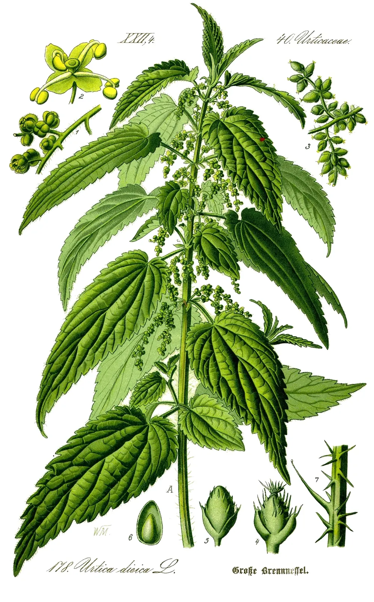

Urtica dioica
Stinging Nettle Leaf
£4.80
Picked in May before flowering. Deep, green and clean.
About this tea
Nettles are the first herb to come up on the combe and the one we wait for. We cut the tops in May, before they flower, and dry them in a single layer so they stay green.
The flavour is like a good spring broth: grassy, mineral and a little sweet. It is our morning cup, and the one regulars reorder most.
Ingredients
Nettle leaf (Urtica dioica). Grown and dried at Wildcombe.
How to use
One heaped teaspoon per cup. Pour over freshly boiled water and leave for five to seven minutes.
Good to know
If you are pregnant or take regular medication, ask your pharmacist before adding new herbal teas.
Delivery and returns
Standard delivery is £3.95, or free over £35, and takes two to four working days (see Shipping and returns in the footer). Next working day is £6.95 when ordered before 1pm. If you are not happy with an unopened product, send it back within 30 days for a refund.